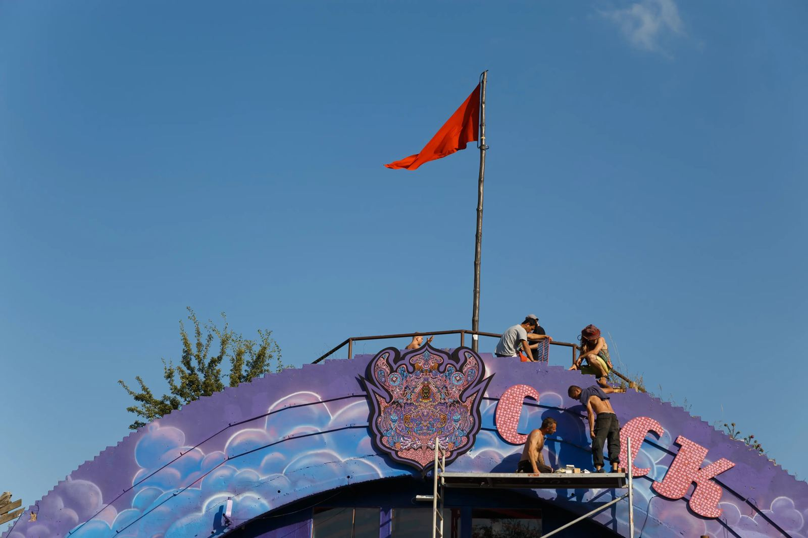

Festivals · Music
Fusion Festival 2028
- Dates
- –
- Venue
- Kulturkosmos Lärz
- Location
- Lärz, Germany
- Format
- In-person
- Category
- Music
- Industry
- Independent arts and music festival
- Organiser
- Kulturkosmos
- Official website
- https://www.fusion-festival.de/
About
Official homepage announces the next edition for 28 June–2 July 2028 after a 2027 pause year. Included because those official dates fall at mid-2028. Dates are local to the host city (Central European Time, UTC+1 / UTC+2 in summer).
Topics: independent music, arts, culture, left-field.
No organiser attendance figure found on the official pages fetched 24 Nov 2026. Ranked by our estimated size tier 'large' (30,000-100,000 attendees/visits), a judgement from format, venue and scale, not an official number.
Sources
- Official — https://www.fusion-festival.de/
Hotels
- Familotel Borchard's Rookhus — 4★ · Am Labus 12, 17255 Wesenberg, Germany · 12.7 km from the venue · Price on request
- Müritz-Strandhotel — 4★ · Seebadstraße 44, 17207 Röbel, Germany · 12.8 km from the venue · Price on request